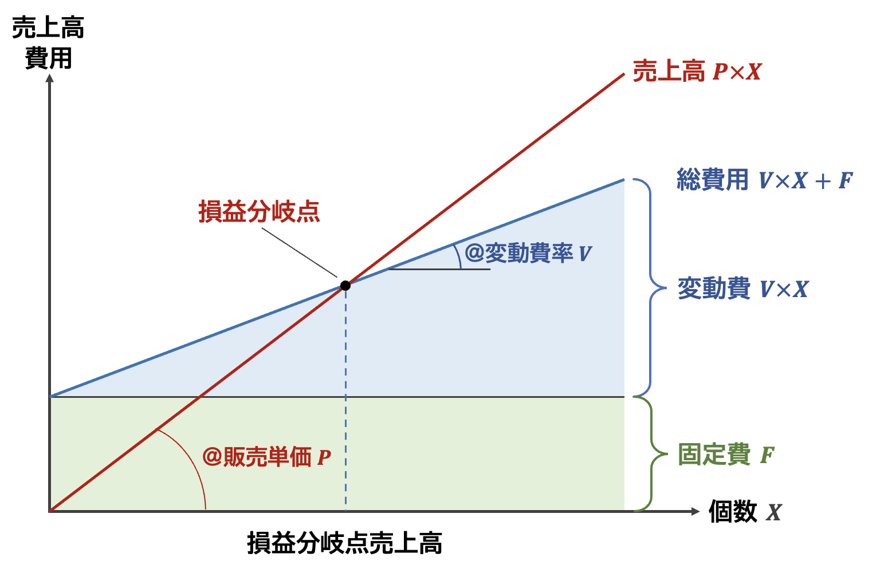
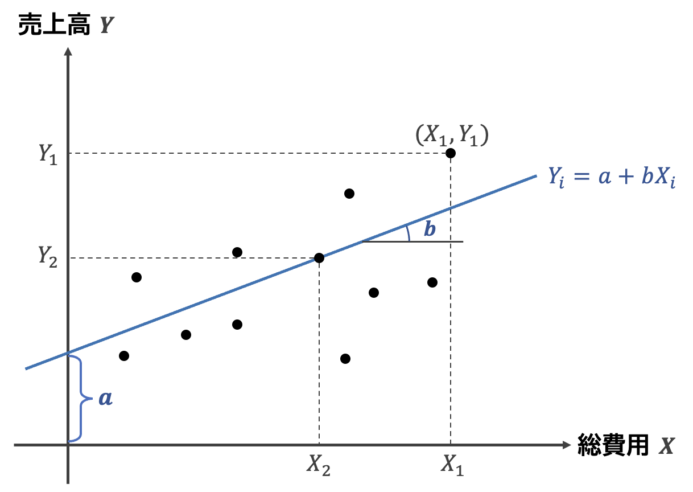

17 不確実性の分析
企業の不確実性を分析する方法の1つに損益分岐点分析があります。 ここでは，損益分岐点分析の基本的な考え方と，損益分岐点分析に関連する概念について説明します。
損益分岐点(cost-volume-profit)とは，売上と費用が同額となる点をいい，そのときの売上高を損益分岐点売上高といいます。 いろいろ説明しますが，以下の図で理解するのが一番早いです。

損益分岐点を計算するために必要な要素は，
- 収益
- 変動費
- 固定費
の3つである。
横軸を個数，縦軸を金額とするグラフを考えてみましょう。 売上高Sは，販売単価Pと個数Xとの積であるため，P \times Xとなる。 変動費は，操業度(ここでは売上高)に応じて変化する費用であり，変動費の単価Vと個数Xの積V \times Xで表します。 売上高が1増えたときに，変動費がどれだけ増えるのかを知るために，変動費単価Vを販売単価Pで除したものV/Pを変動費比率といいます。 固定費は，操業度にかかわらず一定の費用であり，Fで表す。 変動費と固定費の合計である総費用Cは次のように表すことができる。
C = V \times X + F
損益分岐点売上個数は，定義からS = C つまり，P\times X = V \times X + Fの方程式をXで解いたものになります。 解いてみましょう。 \begin{aligned} P\times X &= V \times X + F\\ P\times X - V \times X &= F\\ (P - V) X & = F\\ X &= \frac{F}{P-V}\\ X &= \frac{F}{1- \frac{V}{P}} \end{aligned}
つまり， X = \frac{\text{固定費}}{1- \text{変動費率}}
となり，損益分岐点売上高が\text{固定費} / (1-\text{変動費率}) となることが分かります。 ここで，1-\text{変動費率}を限界利益といい，損益分岐点売上高は，固定費を限界利益で割ったものになります。 要するに，販売個数を1つ増やすごとに増える利益で，固定費を埋めることができる点が損益分岐点なのです。
損益分岐点売上高= \frac{固定費}{限界利益}
しかし，この計算を行うためには，費用を変動費と固定費に分ける必要があり，これは難しいのです。 実務では，企業の中で基準が設けられますが，企業の外から入手できる情報から，変動費と固定費を正確に分けることができないため，簡便的な分類方法を用います。
17.1 総費用法
これは売上高と総費用の2期間比較から変動費率を計算する方法で，もっとも簡単な方法となります。
変動費率 = \frac{総費用_{t} - 総費用_{t-1}}{売上高_{t} - 売上高_{t-1}}
売上高の変化額と総費用の変化額の比率を変動費率として， この比率を売上高にかけることで簡便的に変動費を計算します。
変動費 = 変動費率 \times 売上高
17.2 最小二乗法
最小二乗法(Least Square Mothod)とは，経済学などで用いられる因果関係を分析するための統計分析の手法です。 ここでは，この最小二乗法を用いて変動費率を計算する方法について説明します。
具体的には，総費用Xが売上高Yに影響を与えている，という因果関係を想定し，原因となる総費用を独立変数，結果である売上高を従属変数とした回帰モデルを構築します。
\text{売上高} = a + b \times \text{総費用} + \varepsilon

この回帰モデルを，売上高と総費用のデータを用いて，最小二乗法という方法によりaとbを推定します。 最小二乗法の定義より，回帰係数bは以下のようになる。
\begin{aligned} \hat b &= \frac{\mathrm{cov}(Y,X)}{\mathrm{var}(X)} \\ &= \frac{ \frac 1n \sum ( X_i - \bar X)(Y_i - \bar Y)}{\frac{1}{n}\sum (X_i - \bar X )^2}\\ % &= \frac{(X_i - \bar X)(Y_i - \bar Y)}{(Y_i - \bar Y)^2} \hat a &= \bar Y - \hat b \bar X \end{aligned}
売上高平均\bar Xと総費用\bar Cの平均を計算し，各データから平均値を差し引く。総費用の平均偏差の二乗を分母に，分子には売上高と総費用の平均偏差のかけ算を行うことで回帰係数が計算できる。たぶん，試験にはでないだろう。
この最小二乗法は比較的データが多く取得可能なときに利用できますが，年次データともなると，過去5年程度のデータが必要となり，長期間になればなるほど，固定費が変動費となってしまうため，四半期データを用いるなど工夫が必要となります。
17.3 費目別法
最後に，費目別法という最も正確な方法を解説します。 費目別法では，費用項目ごとに何が固定費で何が変動費かを考えて分類する方法です。何が固定費で何が変動費かは企業によって異なるので，これは企業内で行われる分析方法で，外部の人が実行可能な方法ではありません。 資格試験だと問題文で条件が指示されることもあります。
結論として，ここでは総費用法をしっかり覚えておくことだ大事です。
17.4 損益分岐点比率と営業レバレッジ
実際の売上高と損益分岐点売上高との相対的な規模比較をするための尺度を損益分岐点比率といいます。 損益分岐点売上高よりも大きな売上高を達成している場合，損益分岐点比率は1より大きくなり，大きければ大きいほど望ましい，とされます。 定義は，次の通りです。
損益分岐点比率 = \frac{損益分岐点売上高}{実際の売上高}
また，同様の尺度を逆の方向から見た尺度が安全余裕度といい，実際の売上高と損益分岐点売上高との間の距離のような尺度となっています。
\begin{aligned} 安全余裕度 &= 1 - 損益分岐点比率\\ &= 1 - \frac{損益分岐点売上高}{実際の売上高}\\ &= \frac{実際の売上高 - 損益分岐点売上高}{実際の売上高}\\ \end{aligned}
安全余裕度が0のときは，売上高が損益分岐点にあり，売上高が損益分岐点より大きくなるほど，安全余裕度は1に近づいていきます。 安全余裕度が1に近いときは，売上高が少々減少しても，まだ損益分岐点売上高まで差がある，つまり利益が出る状態が続くことを意味しており，安全余裕度とよんでいます。
安全余裕度を上げるためには，
- 売上高の増加
- 変動費率の引き下げ
- 固定費の削減
が必要となります。
1つめの売上高の変化に注目した尺度に営業レバレッジがあります。 営業レバレッジは次のように定義されます。
営業レバレッジ = \frac{営業利益変化率}{売上高変化率}
つまり，売上高の増減と営業利益の増減の比率となっていて，売上高が増えたとき，営業利益がどれだけ増えるかを示しています。 式の変形を分かりやすくするため，数式の表記として，売上高をS，営業利益をOI，固定費をF，変動費率をVで表します。 ここで，変動費率Vと固定費Fは時間にともなって変化しない，という仮定を暗に置いています。
この設定下で，総費用TCと営業利益OIは次のように表せます。
\begin{aligned} TC_t &= V \times S_t + F\\ OI_t &= S_t - TC_t \\ &= S_t - (V \times S_t - F)\\ &= ( 1- V) S_t - F \end{aligned} と表せます。 この総費用TCと営業利益OIの変化率，つまり営業レバレッジを計算すると，
\begin{aligned} 営業レバレッジ &= \frac{営業利益変化率}{売上高変化率}\\ &= \displaystyle \frac{\frac{OI_{t+1} - OI_{t}}{OI_{t}}}{\frac{S_{t+1} - S_{t}}{S_{t}}} \\ &= \frac{(( 1- V) S_{t+1} - F) - (( 1- V) S_t - F)}{( 1- V) S_t - F} \times \frac{S_{t}}{S_{t+1} - S_{t}}\\ &= \frac{( 1- V)(S_{t+1} - S_t)}{( 1- V) S_t - F}\times \frac{S_{t}}{S_{t+1} - S_{t}}\\ &= \frac{( 1- V)S_{t}}{( 1- V) S_t - F} \end{aligned} 最後の式の分母と分子を(1-V)S_tで除すると， \begin{aligned} 営業レバレッジ &= \frac{( 1- V)S_{t}}{( 1- V) S_t - F} = \frac{\frac{( 1- V)S_{t}}{(1-V)S_t}}{\frac{( 1- V) S_t - F}{(1-V)S_t}}\\ &= \frac{1}{1 - \frac{F}{(1-V)S_t}} = \frac{1}{1 - \frac{\frac{F}{(1 - V)}}{\frac{(1-V)S_t}{(1-V)}}} = \frac{1}{1 - \frac{\frac{F}{(1 - V)}}{S_t}}\\ \end{aligned} と変形できます。 \frac{1}{1 - \frac{\frac{F}{(1 - V)}}{S_t}} 項に注目すると，F/(1-V)は損益分岐点売上高となっています。 よって変数名を分かりやすく日本語でかくと， \frac{1}{1 - \frac{\text{損益分岐点売上高}}{\text{売上高}}} となります。 この損益分岐点売上高 / 売上高は先ほど説明した損益分岐点比率であるため， 書き換えると， \frac{1}{1-損益分岐点比率} = \frac{1}{安全余裕度} となります。 まとめると，営業レバレッジは安全余裕度の逆数となります。